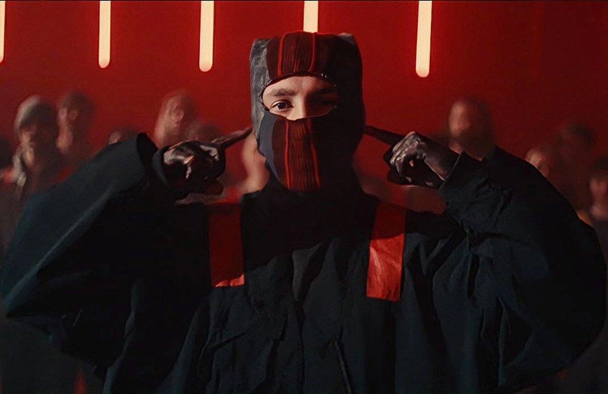
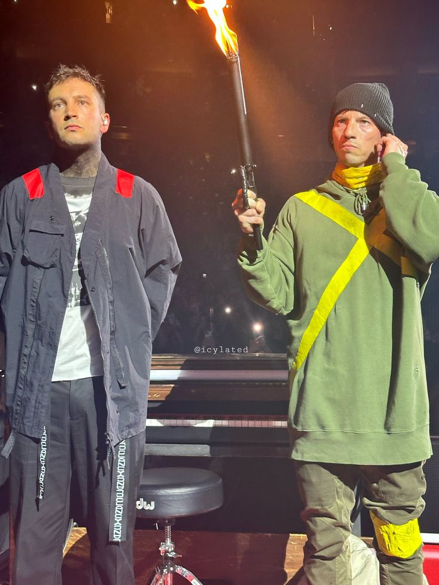

Spotify
Spotify
 Apple Music
Apple Music
BIENVENIDOS DE VUELTA A TRENCH
¿Quién es Clancy?
Hasta ahora hemos hablado tanto de Clancy como de Tyler, ¿pero quién representa que es Clancy en verdad? Es la versión de Tyler que enfrenta sus miedos e inseguridades, aquel que le declarará la guerra a Dema.
Ahora podemos ver que Clancy ya no viste de amarillo como el resto de Banditos, él lleva el mismo color que los Obispos, ya que si recordamos bien ellos no pueden ver el amarillo. El hecho de que Tyler se vista de rojo representa que ya no se esconde y esta preparado para enfrentar sus miedos.
¿Quién es Torchbearer?
El personaje de Josh Dun, Torchbearer (el portador de la antorcha) es el líder de los Banditos, y aquel que ayuda a Clancy en su guerra interna. Tiene el poder de guiar a los demás.
La historia antes del final
Pese a que ya hayamos abarcado casi toda la historia, aquí tenemos un video que resume los eventos ocurridos hasta el momento.
Overcompensate
Antes de empezar con el videoclip podemos escuchar en la canción una frase en alemán, francés y español recitando lo siguiente: "Esta pequeña isla espeluznante me ha convertido en un arma, ambos creemos que podemos usarlo para cambiar el impulso de esta guerra". Esto significa que Clancy y Torchbearer, después de conseguir los cuernos de Ned en Voldsøy, estan preparados para la guerra con Dema.
- La Rebelión - El videoclip comienza con Clancy y Torchbearer dentro de Dema. Clancy se presenta ante un grupo de jovenes, autoproclamandose un rebelde y invitándoles a formar parte de la rebelión uniendose a los Banditos.
- Las Enseñanzas - Clancy y Torchbearer les enseñan a los nuevos rebeldes los símbolos Banditos y formas de escapar de Dema, empezando una revolución desde dentro.
- La Verdad - De un momento a otro Clancy se desploma. Cuando le quitan la máscara todo el mundo se da cuenta de que es un Glorious Gone siendo controlado por el mismo Clancy usando su nuevo poder, que acaba de llegar de vuelta a Trench junto a Torchbearer.
Navigating
Navigating es el vídeo con menos cantidad de lore, así que será rápido de analizar.
- El Viaje - Clancy y Torchbearer empiezan un viaje en busca de los Banditos, para así reunirse con ellos y poder declararle la guerra a Dema.
- Torchbearer - Cuando Clancy encuentra a los Banditos, se lleva una gran sorpresa. Es Torchbearer con quien se encuentra, el Josh que ha estado viendo había estado viendo era una proyección. Recordamos que en Levitate, Nico se lleva únicamente a Tyler, y no es hasta ahora que se reencuentra con el verdadero Torchbearer.
Paladin Strait
En Paladin Strait vemos el inicio del fin de la guerra de Clancy con Dema.
- Los Preparativos - Vemos a los Banditos y a Clancy preparados para luchar contra Dema, aquí es donde va a acabar todo.
- Glorious Gone - Antes de que los Banditos puedan entrar a Dema, los Glorious Gone (controlados por los Obispos) se levantan de sus tumbas de neón para luchar.
- Clancy - Aprovechando la distracción, Clancy escala la torre donde se encuentran todos los Obispos, y usando su nueva arma acaba con ellos con una sorprendente facilidad. Cuando acaba con ellos los Glorious Gone dejan de luchar, dejando a los Banditos una oportunidad para entrar.
- Nico - Repentinamente se abre una puerta, de ella sale Nico, que agarra del cuello a Clancy intentando someterlo de nuevo. Mientras lo hace recita una frase: "So Few, so Proud, so Emotional... Hello Clancy". Few, Proud y Emotional (FPE), representan aquellos que se enfrentan a sus miedos (así también como el fandom de TOP). Nico se burla de Clancy antes de empezar el verdadero final.